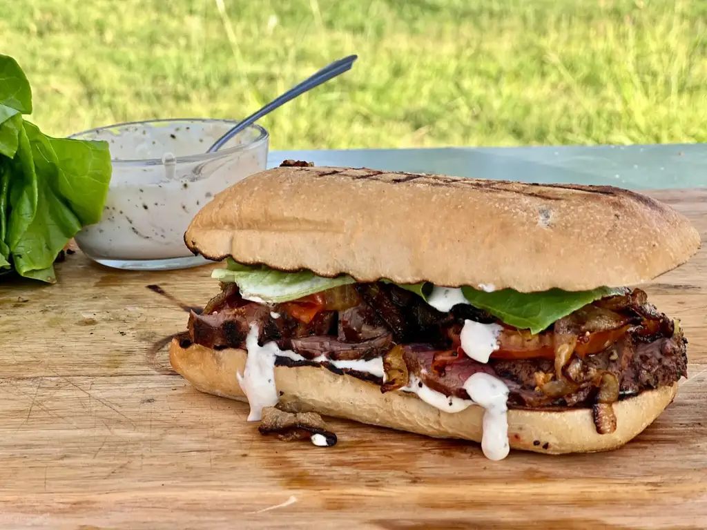

Steak Sandwich
Prep time:
30 mins
Yield:
4
Ingredients
2 large onions, sliced thin
1 large head garlic
4 tbs butter
1 tsp mustard
1/4 cup fresh chopped chives
1/2 lb sliced provolone cheese
2 loaves Italian bread
2 lbs Strip Steak
2 tsp olive oil
salt and pepper
2 tbs butter
3 cloves garlic, quartered
2 sprigs rosemary
Steps
Melt butter and oil in large skillet. Add onions and cook on LOW HEAT for an hour, until brown and caramelize.
Preheat toaster oven to 400°F. Wrap garlic head in foil bake for 45 minutes, until softened.
Mix all the ingredients in a small bowl.
Season both sides of each steak.
Heat your pan on high and add oil. Lower to medium high and add the steaks. Sear them for 4 minutes on each side and 1 minute per edge .
Lower heat to medium and add butter, garlic, and rosemary. Once melted, tilt pan to one side and spoon butter over steaks.
Medium Rare: 135°F.
Medium: 145°F.
Well Done: 160°F.
Tranfer steaks to cutting board and let rest for 10 minutes.
Slice Italian bread in half and open them.
Spread bottom piece with the garlic butter, then the steak slices, caramelized onions.